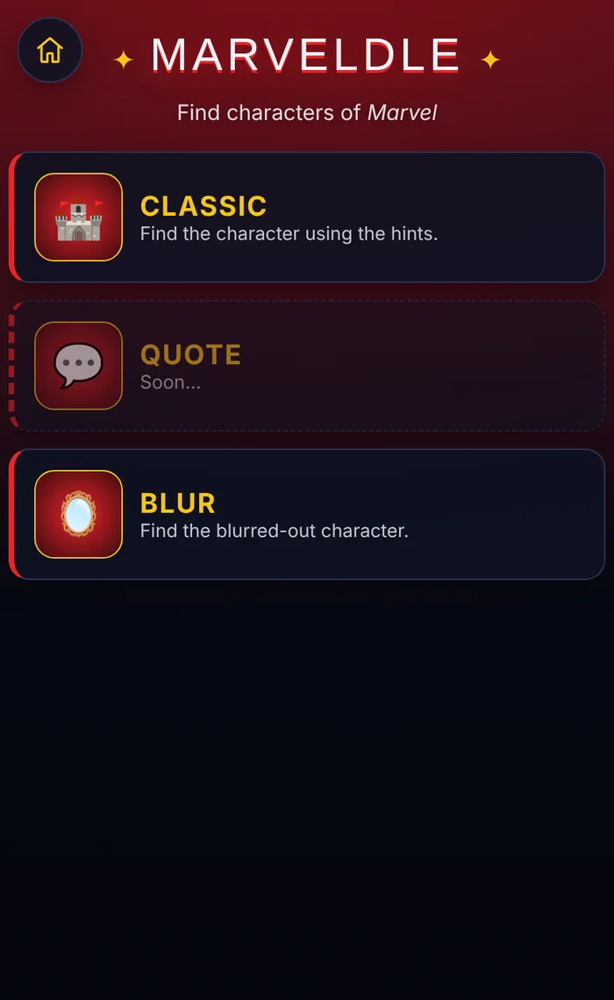
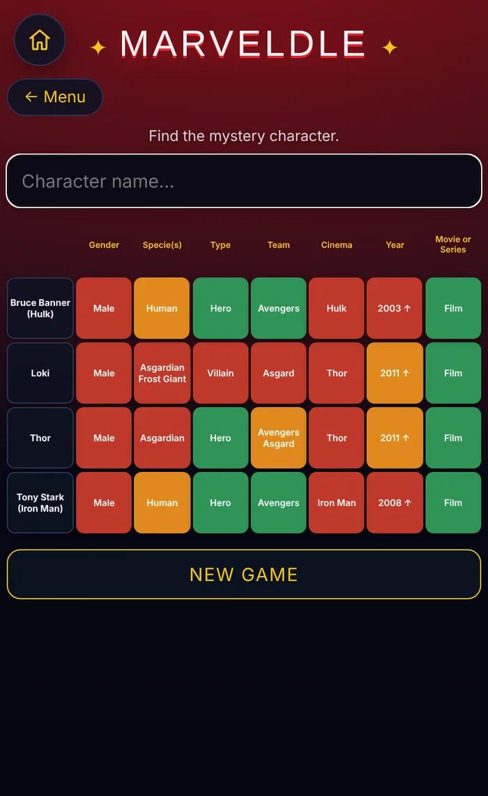
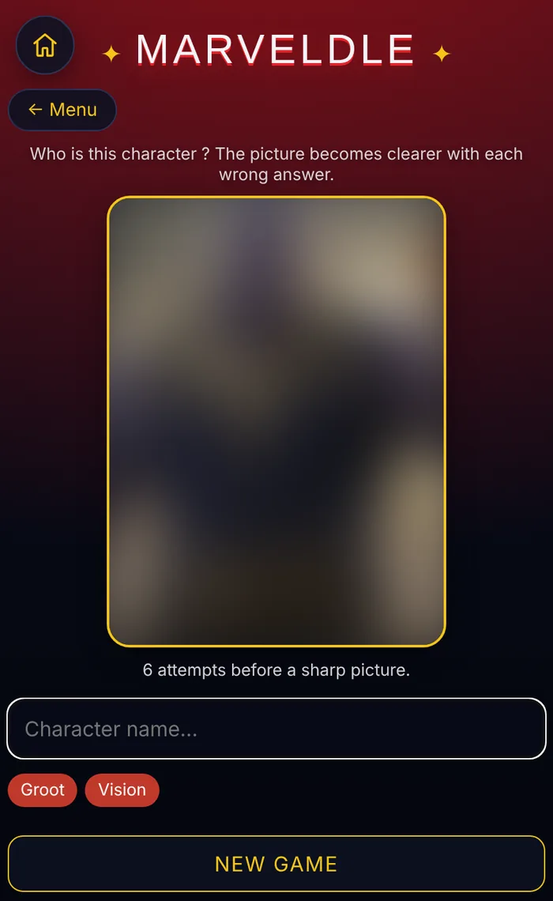

Marveldle
Un jeu de devinettes dans l’esprit des « ‑dle » : trouver un personnage Marvel à partir d’indices, ou à partir d’un portrait de plus en plus net.
Fonctionnalités
- Mode Classic : sept indices comparés à chaque essai, en trois états (exact, partiel, faux), avec une flèche pour l’année.
- Mode Blur : le portrait s’éclaircit en neuf paliers à chaque mauvaise réponse.
- Recherche avec suggestions, insensible aux accents et à la casse.
- 34 personnages décrits dans un simple fichier texte.
- Mode Quote préparé, volontairement désactivé tant qu’il manque des citations.
Pas de lien public pour le moment.